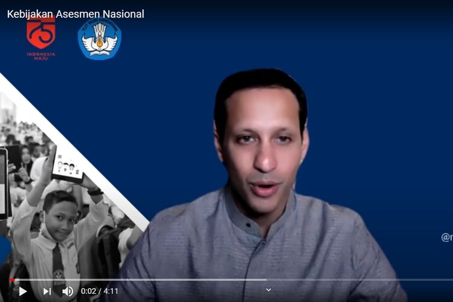

Sah, Guru dan Tenaga Pendidikan Non-PNS Dapat Bantuan Rp 1,8 Juta dari Pemerintah
Menteri Pendidikan dan Kebudayaan (Mendikbud) Nadiem Makarin, Selasa (17/11/2020), meluncurkan program bantuan subsidi upah (BSU) sebesar Rp 1,8 juta kepada sekitar 2 juta orang tenaga pendidikan. Nadiem mengatakan, bantuan tersebut bakal diberikan kepada sekitar 2 juta orang tenaga pendidikan yang meliputi dosen, guru, pendidik PAUD, tenaga perpustakaan, laboratorium, serta administrasi non-PNS alias honorer. Bantuan tersebut diberikan sebanyak satu kali kepada masing-masing penerima. "Dosen, guru, non-PNS, guru kepala sekolah, pendidik PAUD, tenaga perpustakaan, laboratorium, dan administrasi, serta operator sekolah termasuk dalam bantuan BSU," ujar Nadiem ketika peluncuran program di YouTube Kemendikbud.
Nadiem mengatakan, bantuan tersebut diberikan kepada 2.034.732 juta orang, yang terdiri dari 162.277 dosen pada PTN dan PTS, 1.634.832 guru dan pendidik pada satuan pendidikan negeri dan swasta, serta 237.623 tenaga perpustakaan, tenaga laboratorium, dan tenaga administrasi. "Ini termasuk swasta, mereka berhak mendapat bantuan pemerintah, termasuk 237.000 tenaga perpustakaan, laboratorium, dan tenaga administrasi," ujar Nadiem. Nadiem menjelaskan, subsidi upah diberikan untuk membantu para tenaga honorer yang mengalami tekanan di tengah situasi pandemi. Pasalnya, para guru menghadapi beragam gejolak dalam menjalankan tugas, baik dari sisi pembelajaran maupun ekonomi.
Pemerintah pun mengalokasikan anggaran sebesar Rp 3,66 triliun untuk program BSU ini. "Pemerintah harus hadir untuk para tenaga honorer dan dosen-dosen kita untuk bisa melalui masa kritis ini. Dengan bantuan ekonomi yang bisa menyemangati mereka untuk terus mendidik anak-anak kita, untuk terus berinovasi di bidang pendidikan," ucapnya.